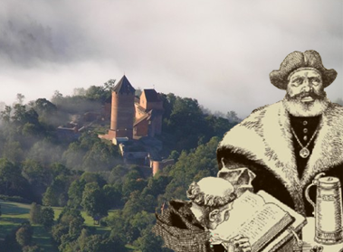

Welcome to Turaida!
I will be your guide back from 17th century, just when the legendary story about the Rose of Turaida took place.
As you have heard Turaida is attracting lovers from all over the world.
Follow the map to find out why.
Visit the locations on map and take one or more photos at each area to reveal the story.
Keep in mind the more photos you take, the more you will reveal.
Start tour
Home
Map
Story